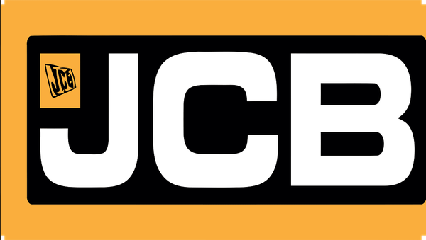
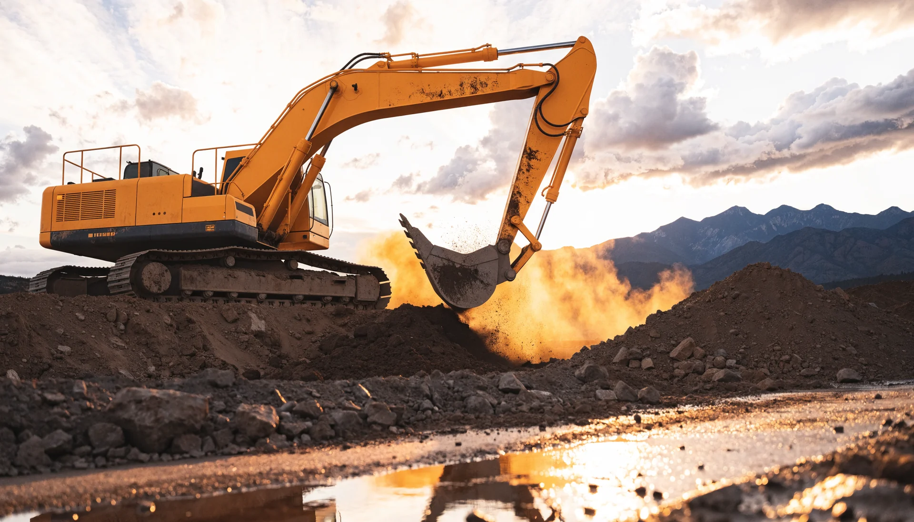
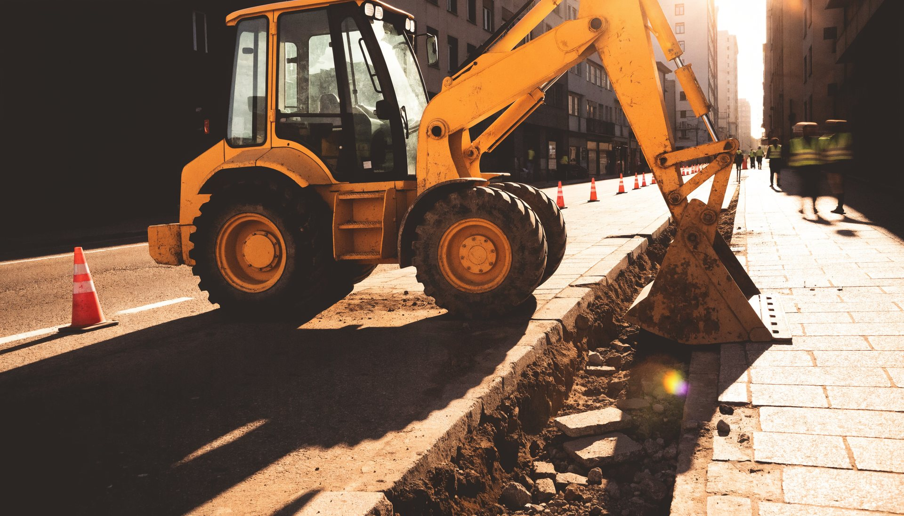
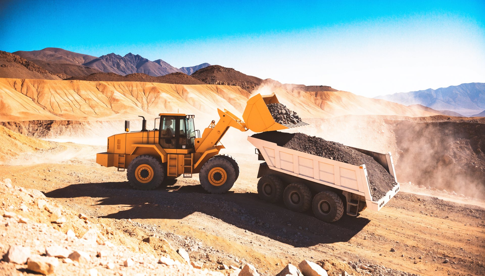
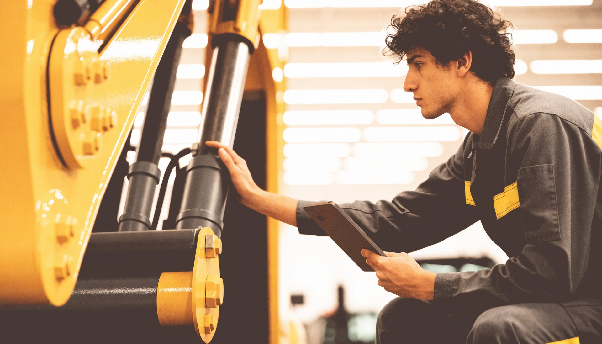

Cuatro páginas completas y genuinamente distintas para JCB Chile, construidas con el amarillo y el negro de la marca, sus tipografías JCBEuro y su contenido real: 39 máquinas publicadas en nueve gamas con sus fotos de catálogo, 18 en arriendo, 15 sucursales con coordenadas, LiveLink y la historia desde 1945. Dos de marca, una inmersiva y una de conversión pura. Y más abajo, una muestra de lo que podemos crear en video.
Cinematográfica: la excavadora al atardecer frente a la cordillera, en video.
Las letras JCB como marca de agua, «Tecnología británica al servicio de su negocio» a 10 vw, polvo en suspensión, contador real de 39 máquinas, manifiesto que se enciende con el scroll, las nueve gamas con sus recortes de catálogo, LiveLink y las 15 sucursales.

Claro, tipo portal: las 39 máquinas reales, con filtros que funcionan.
Cada modelo con su foto de catálogo y su condición real (nuevo, arriendo, usado). Filtros arriba, pegados; cada fila cotiza por WhatsApp con el nombre exacto del modelo ya escrito. Sin cuadrícula: capítulos por gama con filas editoriales.

Chile de norte a sur en seis capítulos a pantalla completa.
A la derecha, las 15 sucursales con sus coordenadas reales; la ruta se dibuja mientras bajas y el contador de kilómetros llega a 3.295. Cada zona con su máquina: generadores en el norte, retroexcavadoras en Santiago, manipuladores en el Maule, rodillos en el sur.

Amarillo pleno, sin menú: un formulario que arma el mensaje solo.
Gama, modelo (los 39 reales en el autocompletado), condición y sucursal más cercana; sale por WhatsApp. Tres pasos, las nueve gamas que se cargan al tocarlas, cinco preguntas frecuentes con respuestas ancladas a jcb.cl.
Cinco piezas de video hechas por Digitals para esta propuesta: tres loops horizontales para los heros de la web y dos reels verticales de 12 segundos para redes. Máquinas JCB en faena, contadas como se merecen. Toque para pausar.
← deslice →
Sobre las imágenes y el video: las doce fotografías de faena y los cinco videos son piezas propias generadas por Digitals para JCB Chile en su paleta. Los recortes de máquinas son las fotos de catálogo que jcb.cl publica. Los datos, todos de jcb.cl.
Esto es un adelanto. Nos encantaría mostrarles el resto: cómo se vería cualquiera de las cuatro direcciones terminada, el plan de contenido en video y cómo se mide. Una reunión de 30 minutos basta.